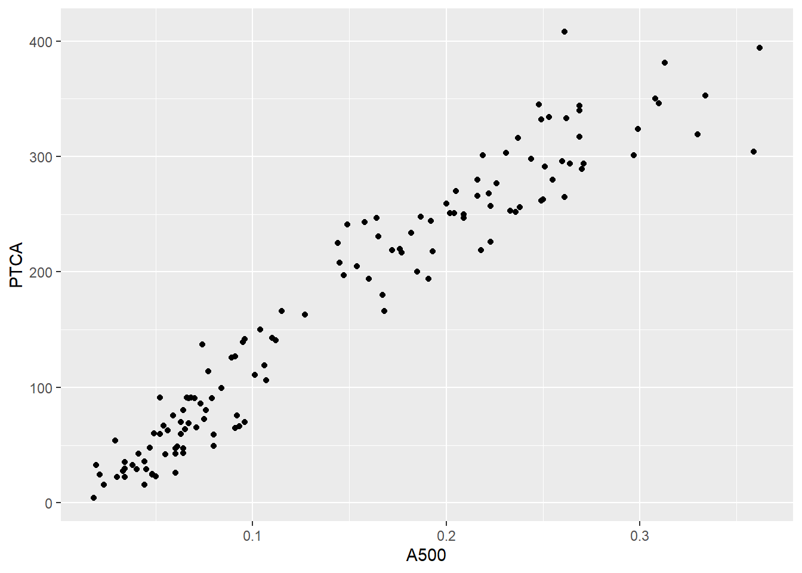
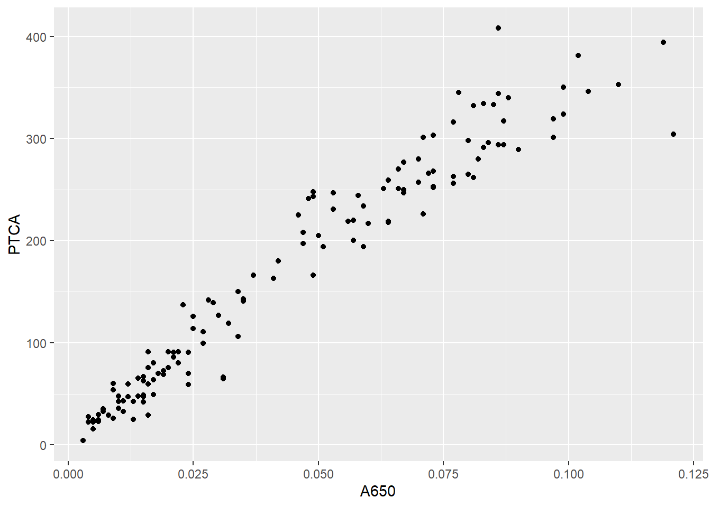
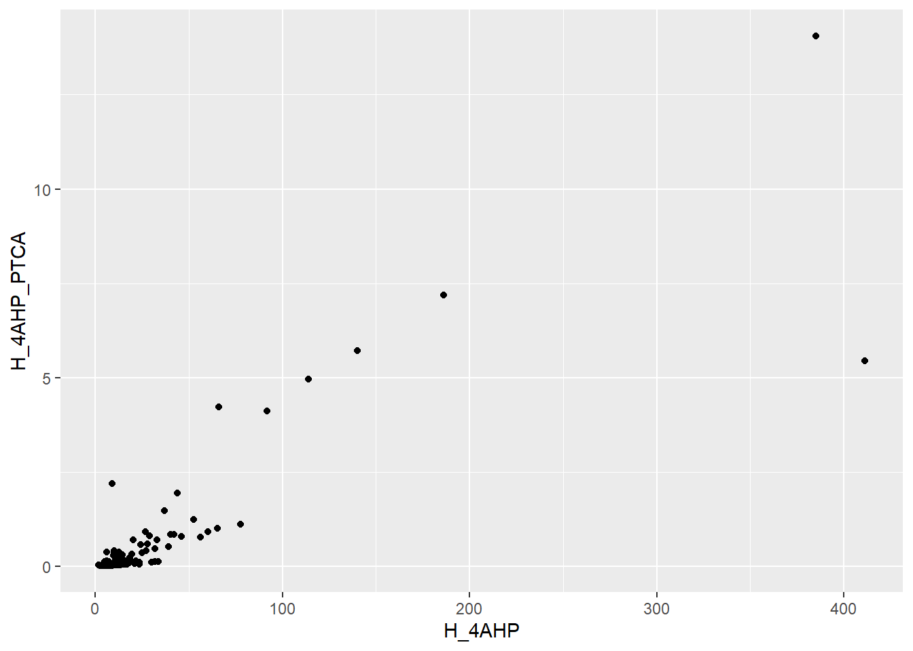

Last updated: 2022-02-19
Checks: 7 0
Knit directory: hairproject/
This reproducible R Markdown analysis was created with workflowr (version 1.7.0). The Checks tab describes the reproducibility checks that were applied when the results were created. The Past versions tab lists the development history.
Great! Since the R Markdown file has been committed to the Git repository, you know the exact version of the code that produced these results.
Great job! The global environment was empty. Objects defined in the global environment can affect the analysis in your R Markdown file in unknown ways. For reproduciblity it’s best to always run the code in an empty environment.
The command set.seed(20220217) was run prior to running the code in the R Markdown file. Setting a seed ensures that any results that rely on randomness, e.g. subsampling or permutations, are reproducible.
Great job! Recording the operating system, R version, and package versions is critical for reproducibility.
Nice! There were no cached chunks for this analysis, so you can be confident that you successfully produced the results during this run.
Great job! Using relative paths to the files within your workflowr project makes it easier to run your code on other machines.
Great! You are using Git for version control. Tracking code development and connecting the code version to the results is critical for reproducibility.
The results in this page were generated with repository version dab9e30. See the Past versions tab to see a history of the changes made to the R Markdown and HTML files.
Note that you need to be careful to ensure that all relevant files for the analysis have been committed to Git prior to generating the results (you can use wflow_publish or wflow_git_commit). workflowr only checks the R Markdown file, but you know if there are other scripts or data files that it depends on. Below is the status of the Git repository when the results were generated:
Ignored files:
Ignored: .RData
Ignored: .Rhistory
Ignored: .Rproj.user/
Untracked files:
Untracked: data/ChemHairData_Nov2020.csv
Note that any generated files, e.g. HTML, png, CSS, etc., are not included in this status report because it is ok for generated content to have uncommitted changes.
These are the previous versions of the repository in which changes were made to the R Markdown (analysis/index.Rmd) and HTML (docs/index.html) files. If you’ve configured a remote Git repository (see ?wflow_git_remote), click on the hyperlinks in the table below to view the files as they were in that past version.
| File | Version | Author | Date | Message |
|---|---|---|---|---|
| Rmd | dab9e30 | FredodaFred | 2022-02-19 | wflow_git_commit("analysis") |
| html | c9a591f | FredodaFred | 2022-02-17 | Build site. |
| Rmd | a6de633 | FredodaFred | 2022-02-17 | Start workflowr project. |
Welcome to my research website.
library("ggplot2")
dataset = read.csv("./data/ChemHairData_Nov2020.csv", TRUE, ",")
summary(dataset) ï..ID Duplicate Study Ancestry
Min. : 1.0 Min. :0.00000 Length:135 Min. :0.000
1st Qu.: 35.5 1st Qu.:0.00000 Class :character 1st Qu.:1.000
Median : 69.0 Median :0.00000 Mode :character Median :2.000
Mean : 63023.2 Mean :0.05926 Mean :1.978
3rd Qu.:140741.5 3rd Qu.:0.00000 3rd Qu.:2.000
Max. :163220.0 Max. :1.00000 Max. :6.000
Treated_micro Treated_survey Perceived_color A500
Min. :0.00000 Min. :0.00000 Length:135 Min. :0.0180
1st Qu.:0.00000 1st Qu.:0.00000 Class :character 1st Qu.:0.0635
Median :0.00000 Median :0.00000 Mode :character Median :0.1150
Mean :0.08889 Mean :0.05185 Mean :0.1453
3rd Qu.:0.00000 3rd Qu.:0.00000 3rd Qu.:0.2230
Max. :2.00000 Max. :1.00000 Max. :0.3620
A650 PTCA TTCA H_4AHP
Min. :0.00300 Min. : 4.10 Min. : 10.60 Min. : 1.70
1st Qu.:0.01600 1st Qu.: 63.15 1st Qu.: 22.35 1st Qu.: 6.70
Median :0.03700 Median :163.00 Median : 39.00 Median : 10.70
Mean :0.04479 Mean :168.83 Mean : 41.75 Mean : 24.37
3rd Qu.:0.07150 3rd Qu.:262.50 3rd Qu.: 53.15 3rd Qu.: 19.90
Max. :0.12100 Max. :408.00 Max. :103.00 Max. :411.00
NA's :76
A650_A500 TTCA_PTCA H_4AHP_PTCA PTCA_A500
Min. :0.1136 Min. :0.1588 Min. : 0.007716 Min. : 227.8
1st Qu.:0.2666 1st Qu.:0.2648 1st Qu.: 0.032139 1st Qu.: 989.4
Median :0.3125 Median :0.5636 Median : 0.058394 Median :1138.5
Mean :0.2878 Mean :0.9118 Mean : 0.545224 Mean :1116.7
3rd Qu.:0.3242 3rd Qu.:0.8820 3rd Qu.: 0.311973 3rd Qu.:1293.2
Max. :0.3684 Max. :5.4167 Max. :14.051095 Max. :1862.1
NA's :77 ggplot(dataset, aes(x = A500 , y =PTCA )) +
geom_point()
ggplot(dataset, aes(x = A650 , y =PTCA )) +
geom_point()
ggplot(dataset, aes(x = H_4AHP , y =H_4AHP_PTCA )) +
geom_point()
sessionInfo()R version 4.1.2 (2021-11-01)
Platform: x86_64-w64-mingw32/x64 (64-bit)
Running under: Windows 10 x64 (build 19044)
Matrix products: default
locale:
[1] LC_COLLATE=English_United States.1252
[2] LC_CTYPE=English_United States.1252
[3] LC_MONETARY=English_United States.1252
[4] LC_NUMERIC=C
[5] LC_TIME=English_United States.1252
attached base packages:
[1] stats graphics grDevices utils datasets methods base
other attached packages:
[1] ggplot2_3.3.5 workflowr_1.7.0
loaded via a namespace (and not attached):
[1] Rcpp_1.0.8 highr_0.9 compiler_4.1.2 pillar_1.7.0
[5] later_1.3.0 git2r_0.29.0 jquerylib_0.1.4 tools_4.1.2
[9] getPass_0.2-2 digest_0.6.29 gtable_0.3.0 evaluate_0.14
[13] tibble_3.1.6 lifecycle_1.0.1 pkgconfig_2.0.3 rlang_0.4.12
[17] rstudioapi_0.13 yaml_2.2.1 xfun_0.29 fastmap_1.1.0
[21] withr_2.4.3 httr_1.4.2 stringr_1.4.0 knitr_1.37
[25] fs_1.5.2 vctrs_0.3.8 grid_4.1.2 rprojroot_2.0.2
[29] glue_1.6.0 R6_2.5.1 processx_3.5.2 fansi_1.0.2
[33] rmarkdown_2.11 farver_2.1.0 callr_3.7.0 magrittr_2.0.1
[37] whisker_0.4 scales_1.1.1 ps_1.6.0 promises_1.2.0.1
[41] htmltools_0.5.2 ellipsis_0.3.2 colorspace_2.0-2 httpuv_1.6.5
[45] labeling_0.4.2 utf8_1.2.2 stringi_1.7.6 munsell_0.5.0
[49] crayon_1.4.2